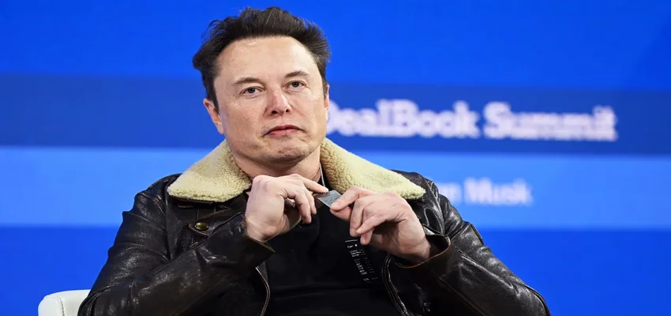

Elon Musk is going down a conspiratorial rabbit hole and taking X with him
Elon Musk seems hellbent on transforming what was once Twitter into a far-right fever swamp.
The billionaire conspiracy theorist once vowed that the platform, which he rebranded as X, would not “become a free-for-all hellscape” under his watch. But since he made that pledge in October 2022, Musk has ordered a number of actions that fly in the face of those words.
The most glaring example, arguably, came over the weekend when Musk welcomed back right-wing extremist Alex Jones, the notorious conspiracy theorist most infamous for tormenting the families of the Sandy Hook Elementary School shooting with reprehensible lies. Jones had been banned by the social media company’s previous management for repeated violations of harassment and hate policies.
But Musk welcomed Jones back into the social media kingdom that he now reigns over after conducting a very unscientific poll of his followers and a right-wing pressure campaign from Jones’ allies demanding the Infowars founder be given back his megaphone. That pressure campaign coincided with a sympathetic interview Jones did with Tucker Carlson, another right-wing extremist who Musk often promotes.
Not only did Musk cave to the demands of the right-wing mob and reinstate Jones’ account, but X actively encouraged its users to follow it. Prior to his ban five years ago, Jones had nearly 900,000 followers on Twitter. By Monday evening, he had had surged to 1.6 million on X.
This behavior should not be seen in a vacuum. It’s part of a year-long pattern for Musk, who acquired Twitter in October 2022 for $44 billion. As owner, Musk has reversed previous bans on racists, extremists and others exiled for repeatedly going over the guardrails. Musk, who removed such guardrails, has defended these actions by portraying himself as a free speech absolutist, though he has simultaneously tried to curtail the speech of critics.
Regardless, what is perhaps most alarming about Musk’s behavior is how he has seemed to go out of his way to amplify the voices of right-wing extremists. Not only has Musk allowed them to return to the platform, but as X’s most-followed user, he has repeatedly promoted their dishonest posts and appeared to seek out their approval.
On Sunday evening, for instance, instead of addressing the families of victims of the Sandy Hook shooting and explaining to them his rationale for entrusting Jones with a large audience, Musk spent his time hanging out with the professional conspiracy theorist and other right-wing extremists on an audio stream, answering their questions and taking their requests.
And while some continue to hold out hope that Musk will see the error of his ways that has spawned a mass exodus of advertisers, cratering the company’s valuation, it is clear that he has fallen into a conspiratorial rabbit hole, taking the entire platform down with him.